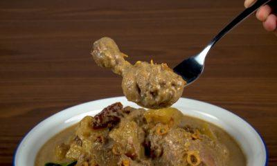
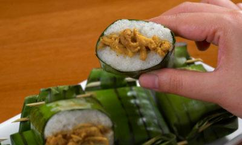
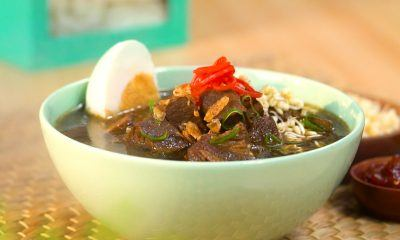
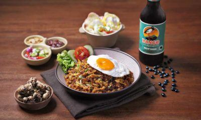

Selengkapnya
Ayam Kurma
Resep Ayam Kurma, Kolaborasi Cita Rasa Tradisional dan Timur Tengah/p>

Selengkapnya
Lemper Ayam
Resep Lemper Ayam Bumbu Rendang, Camilan Tradisional yang Enak

Selengkapnya
Rawon
Resep Rawon Khas Malang dengan Bango Bumbu Kuliner Nusantara

Selengkapnya
Nasi Goreng Kencur
Resep Nasi Goreng Kencur, Yang Lezat untuk Makan Malam
Nasi Liwet
Resep Liwetan Khas Sunda yang Aromanya Selalu Menggoda